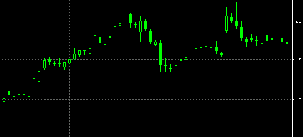

Chart type is the type or 'style' of the main plot that the user wishes to display. The available types are:
Each chart has a menu option called "ChartPrefs" (right-click on the Qtstalker program chart window) to configure the preferences for that particular chart type.
The standard OHLC bar chart. Color is used to show up, down or no change status from the previous bar. The ChartPrefs menu enables choice of various types of Bar Chart, e.g. Paint Bar.
Same as the Bar chart type except that the colors used are based on the alert status rules of an active indicator. Used for showing generalized support and resistance areas. For example, this paint bar is based on the MACD indicator. Notice how when the red MACD line rises above the MACD yellow trigger line, the bars are green, meaning a buy alert. When the MACD falls below the MACD trigger line, the bars are colored red, meaning a sell alert.

This chart is just a single line plot based on the day's close value. The ChartPrefs menu enables choice of a different value, e.g. open price.

This is the standard candlestick chart. An empty box (traditionally white) candle body means that the close was higher than the open. A solid (traditionally black) candle body means that the close was lower than the open.
The ChartPrefs menu enables choice of various types of candle chart, e.g. Candle, CandleQS, Volume Candle

This is a custom candle chart. An empty box (traditionally white) candle body means that the close was higher than the open. A solid (traditionally black) candle body means that the close was lower than the open. Colour adds another dimension. Red is a lower close than the previous close. Green is a higher close. Blue indicates no change from the previous close.

Candles are specially coloured according to the day's volume.
When exhaustion points are reached, then a short-term reversal might be indicated. See the separate documentation about exhaustion points.
Qtstalker version of Point and Figure uses a general box sizing formula. The formula is calculated by taking the increment of the current chart scale and divide that by 4. A 3 box reversal is also used. The other difference is no X's or O's are used, instead we use colors. Color up is used for X's and Color Down is used for O's. Much easier to gauge at a glance and stays in keeping with other chart type uses of color. Note that Qtstalker uses a time based style that allows you to overlay indicators.

This is the typical Gann type swing chart. An up swing is colored green. A down swing is colored red.